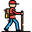
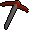

In this release
The walker no longer clicks the chatbox, side panel or minimap when it means to click a staircase, ladder or trapdoor. If you start the client from the launcher with a Jagex Account, your scripts can log you back in again after a break. On the Hub, four mining scripts now recognise every pickaxe variant, from dragon (or) to infernal and 3rd age. Motherlode Mine also takes a better pickaxe out of your bank. Gem Crab Killer keeps your potion boosts up, and Volcanic Ash Miner mines again when other players are around. This release ships Microbot client 2.6.46 together with those Hub updates.
Walker clicks stay out of the chatbox

Say you're walking from the top floor of Lumbridge castle down to the ground floor. The walker clicks the staircase from a distance and lets the game walk you to it, but in resizable mode part of the staircase sits behind the chatbox. The click landed on the chatbox instead, sometimes on its Report button, and you stood still while a report window opened. Players saw the same at the Edgeville trapdoor, about half the time.Now the walker only clicks the part of an object that you can actually see in the game view, at least a few pixels clear of the chatbox, the side panel and the minimap.
- Partly covered: the click goes to the visible part. If only the top of the trapdoor shows above the chatbox, that's where it clicks.
- Fully covered: the walker turns the camera towards the object once and looks again.
- Still covered after that: it doesn't click at all, and the walker tries again as you get closer. The log says for example "Can't click Staircase - it is behind the chatbox, side panel or minimap even after turning the camera. If this keeps happening, zoom out or move the camera so it is in view." You'll see that line at most once every 10 seconds per object.
The click point could fall anywhere on the object, even under the chatbox, side panel or minimap. With natural mouse on, the corrected point after the mouse moved could land there too.
Both the first click and the corrected point stay inside the clear part of the game view. When nothing is clear, nothing is clicked.
This matters most with Interact with obstacles at range in the walker's advanced settings, which is on by default. Scripts that click game objects through Microbot's object API, such as a bank booth or a rock, get the same protection. With natural mouse on, clicks on NPCs and other characters also stay clear when the mouse corrects its aim.
Launcher logins keep your Jagex character
 When you press Play With Jagex Account in the Microbot launcher, the client starts on the profile you picked for that character. The profile's name doesn't have to match the character, for example a profile called "Main#" for a character called "IronMiner42".
When you press Play With Jagex Account in the Microbot launcher, the client starts on the profile you picked for that character. The profile's name doesn't have to match the character, for example a profile called "Main#" for a character called "IronMiner42".
Since 2.6.45, a login on that profile was treated as an old-style username and password login. After a break or a disconnect, the script typed "Main#" into the username box and the relog failed, so a Herbiboar session stopped at the login screen. Now a login on the profile the launcher started with uses the launcher's Jagex character again. If you switch to a different profile in the Profile Manager, that profile still logs in with its own details, as in 2.6.45.
Every pickaxe counts

Say you mine at the Motherlode Mine with a dragon pickaxe (or). The script didn't recognise it, so it took a rune pickaxe out of your bank, or stopped with "No pickaxe found in bank or inventory". Several mining scripts only knew the plain version of each pickaxe. They now recognise every version of each tier:- dragon pickaxe (or) and the dragon pickaxe upgraded at Zalcano,
- infernal pickaxe, charged or not,
- 3rd age pickaxe,
- the trailblazer pickaxes,
- crystal pickaxe, inactive or not.
Each one ranks with its own tier, so an infernal pickaxe counts as a dragon pickaxe.
 Motherlode Mine1.9.11
Motherlode Mine1.9.11Once each time you start, the script checks whether your bank holds a better pickaxe that you have the Mining level for. Say you're wielding a rune pickaxe and your bank has a dragon pickaxe. It opens the bank and takes out the dragon pickaxe. It wields it if your Attack level allows, otherwise it mines with it from your inventory, and it banks the rune pickaxe. If your inventory is full, it banks one item that the script doesn't need to make room. The log tells you about each swap, and says when your Attack is too low to wield the new pickaxe.
It also mines with the best pickaxe you carry. Before, a wielded pickaxe always won, even when a better one was in your inventory.
Shooting Star1.4.12Recognises every pickaxe version above. Stars can land in the Wilderness, so the script never takes a 3rd age pickaxe out of your bank. If that's the only pickaxe it could use, it stops and tells you to equip it or put it in your inventory before you press start, or to bank another pickaxe you have the levels for. If it takes a lower pickaxe instead, the log says once that it skipped the 3rd age one.
AIO Camdozaal1.0.1The Pickaxe option now accepts every version of the pickaxe you chose, and it takes the exact version you picked out of the bank first. There is a new 3rd age option. The Trailblazer option didn't match any item before, so it could never find your pickaxe. It works now. Your saved choice stays as it was.
Auto Essence Mining1.0.5Recognises every pickaxe version above, so a dragon pickaxe (or) or an infernal pickaxe now counts as a dragon pickaxe.
Plugin updates
 With Use Offensive Potions on, the script drank a potion at the start and then never again. It only drank while you were "in combat", and the Gem Crab never hits back, so that was hardly ever true. Now it drinks whenever a live crab is there and your boost has run out:
With Use Offensive Potions on, the script drank a potion at the start and then never again. It only drank while you were "in combat", and the Gem Crab never hits back, so that was hardly ever true. Now it drinks whenever a live crab is there and your boost has run out:
- A divine potion is drunk again when its 5-minute timer ends. It is only drunk above 20 HP. Below that, the script uses a normal potion instead.
- Other potions are drunk again once most of the boost has worn off.
- It drinks one dose and waits for the boost to show, so no doses are wasted.
A new Offensive potion option picks what to drink: Any (best available), Divine super combat, Super combat, Combat, Super attack + strength, Ranging or Magic. Super combat never drinks your divine super combat potions by mistake.
The script now eats below 50% HP, also right after a divine dose. Dharok mode keeps its own eating. The overlay shows the skill you're training, for example "Attack → 73", with the time and XP to the next level. XP per hour is no longer off if you start the plugin while logged out.
Volcanic Ash Miner1.2.2With Max players in area above 0, the script stopped working as soon as another player was in view. It showed an error every tick, so it didn't mine and it didn't hop either. Now it counts the other players mining ash within 15 tiles of you, and hops when there are more than your limit. With a limit of 2 and three other players mining nearby, the log says "3 other players are mining here (limit 2). Hopping to world 444..." and you hop. If the hop fails, it says "Could not hop to world 444. Will try again shortly."
Calcified Rock Miner1.1.5The same fix for Max players in area. It counts every other player within 15 tiles who is doing something, so a player fighting or doing an emote nearby counts too.
During a login, a world hop or a loading screen, the game briefly doesn't know where you are. The script then put an error in the log. Now it waits for the next tick and carries on.
Other fixes
For script developers
Rs2Widget.hasVisibleWidgetTextnow does the widget lookup and theisHidden()check together on the client thread. Calling it from your script thread, directly or throughRs2Fletching.isFletchingInterfaceOpen(), no longer throwsIllegalStateException.Rs2TileObjectModel.clicknow clicks only inside the part of the clickbox that is clear of the chatbox, side panel and minimap. It can returnfalsewithout clicking when the object stays covered after one camera turn, so check the result.Rs2UiHelpergainssceneViewportBoundsandclearOfInterfaces. The list of covering interfaces moved there fromRs2WalkerMovement, so tile clicks and object clicks share it.- The deprecated
util.tileobject.Rs2TileObjectModelstill clicks the raw clickbox. Switch toapi.tileobject.models.Rs2TileObjectModelto get the new behaviour.
How to update
 Restart Microbot to get client 2.6.46. Motherlode Mine 1.9.11, Shooting Star 1.4.12, AIO Camdozaal 1.0.1, Auto Essence Mining 1.0.5, Gem Crab Killer 1.0.5, Volcanic Ash Miner 1.2.2, Calcified Rock Miner 1.1.5 and Tithe Farming 1.1.15 show up in the Microbot Hub panel inside the client.
Restart Microbot to get client 2.6.46. Motherlode Mine 1.9.11, Shooting Star 1.4.12, AIO Camdozaal 1.0.1, Auto Essence Mining 1.0.5, Gem Crab Killer 1.0.5, Volcanic Ash Miner 1.2.2, Calcified Rock Miner 1.1.5 and Tithe Farming 1.1.15 show up in the Microbot Hub panel inside the client.
Game images © Jagex Ltd., via the Old School RuneScape Wiki.